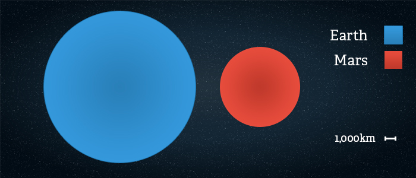

Mars is the fourth planet from the Sun – a dusty, cold, desert world with a very thin atmosphere. Mars is also a dynamic planet with seasons,
polar ice caps, canyons, extinct volcanoes, and evidence that it was even more active in the past. It was named by the ancient Romans for their god of war because its reddish color was
reminiscent of blood. Other civilizations also named the planet for this attribute; for example, the Egyptians called it "Her Desher," meaning "the red one." Even today, it is frequently
called the "Red Planet" because iron minerals in the Martian dirt oxidize, or rust, causing the surface to look red.
Structure
Mars has a dense core at its center between 1,500 to 2,100 kilometers in radius. It's made of iron, nickel, and sulfur. Surrounding the core is a rocky mantle
between 1,240 to 1,880 kilometers thick, and above that, a crust made of iron, magnesium, aluminum, calcium, and potassium. This crust is between 10 to 50 kilometers deep.
Size
With a radius of 3,390 kilometers, Mars is about half the size of Earth. If Earth were the size of a nickel, Mars would be about as big as a raspberry.
From an average distance of 228 million kilometers, Mars is 1.5 astronomical units away from the Sun. One astronomical unit (abbreviated as AU), is the distance from the Sun to Earth.
From this distance, it takes sunlight 13 minutes to travel from the Sun to Mars.


Surface
The Red Planet is actually many colors. At the surface, we see colors such as brown, gold, and tan. The reason Mars looks reddish is due to oxidization—or
rusting—of iron in the rocks, regolith (Martian “soil”), and dust of Mars. This dust gets kicked up into the atmosphere and from a distance makes the planet appear mostly red.
Interestingly, while Mars is about half the diameter of Earth, its surface has nearly the same area as Earth’s dry land. Its volcanoes, impact craters, crustal movement, and
atmospheric conditions such as dust storms have altered the landscape of Mars over many years, creating some of the solar system's most interesting topographical features.